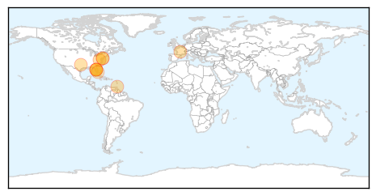
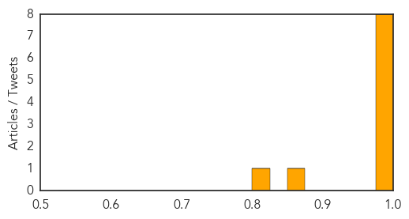
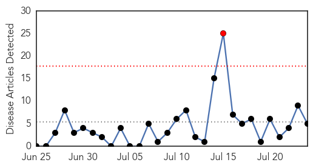
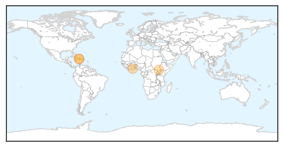

Chikungunya
30-Day Web Trend
1 alerts, 0 warnings

30-Day Twitter Trend
0 alerts, 0 warnings

Article Locations
Article Confidences
Top Articles:
- 0.999
- Threatwatch: Chikungunya virus hits the US and Europe
- 0.998
- Mosquito-carried virus Chikungunya arrives
- 0.996
- Trinidad and Tobago's Newsday
- 0.996
- U.S. Army responds to threat of chikungunya in U.S.
- 0.995
- Number of people susceptible to painful mosquito-borne virus increasing, says leading researcher
- 0.990
- Protect yourself from new-to-US virus carried by mosquitoes
- 0.983
- Sussex County Man Contracts Mosquito Illness Chikungunya
- 0.977
- New Mosquito-bourne Disease Reaches U.S.
- 0.855
- Sussex County man contracts chikungunya in Caribbean
- 0.808
- South Miami Fighting to Keep County from Spraying for Mosquitoes
Top Tweets:
-
No tweets found for Jul 24, 2014
Cholera
30-Day Web Trend
1 alerts, 0 warnings

30-Day Twitter Trend
0 alerts, 0 warnings

Article Locations
Article Confidences

Top Articles:
Top Tweets:
- 0.577
- Scarlet Fever! Cholera! Gout! @Telegraph Victorian diseases have come back to haunt us http://t.co/2SshPbq920